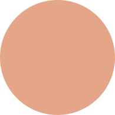
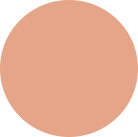

Fibre Reactive
Colaboración Interdisciplinaria: Micólogos y biólogos

Estudio de Comportamiento: Crecimiento óptimo

Investigación científica y Materiales biológicos
Selección del Hongo: Pycnoporus coccineus
Objetivo: Explorar biología, moda y sostenibilidad.
Integración Tecnológica y de Computación
Sistema Modular (inferido): Análisis y simulación ambiental
Variabilidad Biológica:
Influencia ambiental en el diseño final
Interacción con el Público: Cambios constantes en la prenda
Idea principal: Prenda viva utilizando hongos.
Bioarte (arte con organismos vivos).
Innovación en moda y tecnología vestible.
Naturaleza como parte del diseño.
Conceptualización y Diseño del Proyecto
Monitorización Ambiental: Sensores para controlar temperatura y humedad
Aplicación del hongo en la superficie
Crecimiento en la Prenda: El hongo crece durante el uso
Crecimiento Controlado: Sistemas que regulan condiciones ambientales
Proceso Abductivo: Franklin reacciona a los cambios naturales del hongo
Instalación: Sistemas de control ambiental para crecimiento
Visualización en Tiempo Real: Tecnología para mostrar el crecimiento del hongo
Fibre Reactive (2004) es una obra pionera de bioarte y tecnología vestible creada por la artista australiana Donna Franklin. Este proyecto explora la integración de organismos vivos, específicamente hongos, en el mundo de la moda, creando una relación simbiótica entre la biología y la ropa. Franklin utiliza el Pycnoporus coccineus, un tipo de hongo naranja de la madera, en sus diseños,
permitiendo que el hongo interactúe con el entorno del usuario y crezca directamente sobre la tela. La obra amplía los límites de lo que constituye la moda, explorando conceptos como la sostenibilidad, la transitoriedad y la relación entre el ser humano y la naturaleza. Al unir arte, ciencia y moda, Fibre Reactive desafía las concepciones tradicionales del diseño y uso de las prendas.
Reflexiones de grupo
 
Fibre Reactive de Donna Franklin rompe las barreras tradicionales del diseño
de moda al integrar organismos vivos en la prenda. El hongo Pycnoporus coccineus crece sobre el tejido, lo
que convierte el vestido en un ente dinámico, que responde a su entorno. Este proyecto cuestiona los límites materiales
de la moda y explora cómo el diseño puede evolucionar hacia lo biológico, abriendo nuevas posibilidades en
la creación sostenible y experimental.
La integración de elementos vivos en el diseño nos lleva
a replantearnos nuevas formas de pensar el arte
y la moda, no como objetos estáticos, sino como entidades orgánicas y cambiantes. Este enfoque representa una evolución natural del diseño en la era contemporánea, impulsando la simbiosis entre la biología y la creatividad.
El proceso detrás de Fibre Reactive refleja la riqueza de la colaboración interdisciplinaria.
Franklin trabajó de la mano con biólogos y micólogos para garantizar el crecimiento controlado del hongo,
demostrando cómo la ciencia puede enriquecer el arte. Este tipo de trabajo interdisciplinario amplía los límites creativos, transformando el diseño en una plataforma para la innovación científica.
Este proyecto también plantea interrogantes sobre los límites éticos de la manipulación biológica en el arte. ¿Hasta dónde puede llegar la intervención humana
sin comprometer la autonomía de los organismos vivos? Al abordar estos temas, Fibre Reactive invita a
reflexionar sobre el futuro del diseño y su relación con la naturaleza, destacando la relevancia de la interdisciplinariedad en la creación contemporánea.